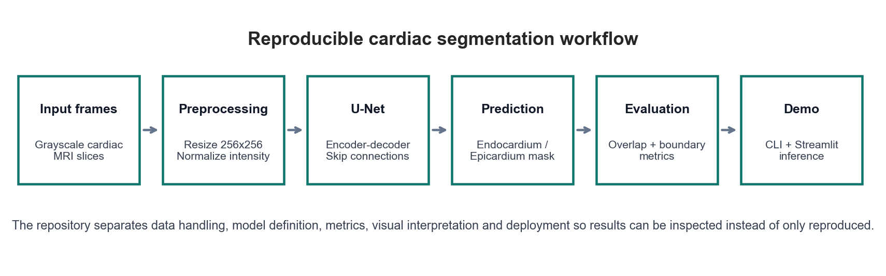
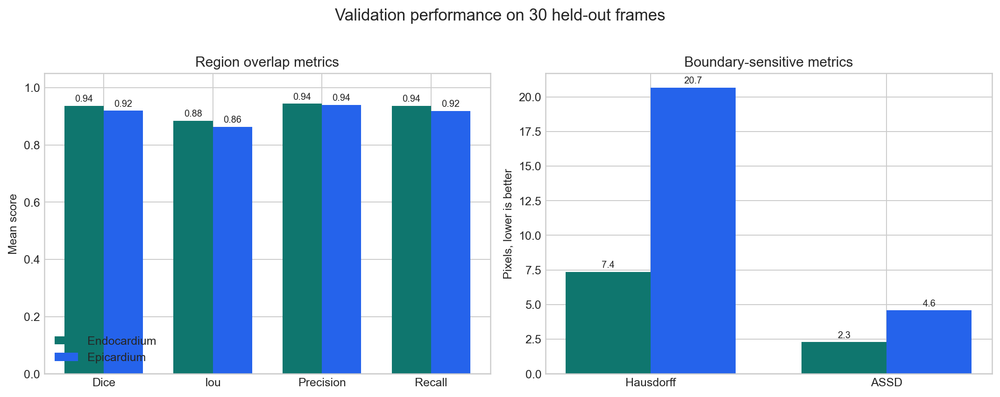
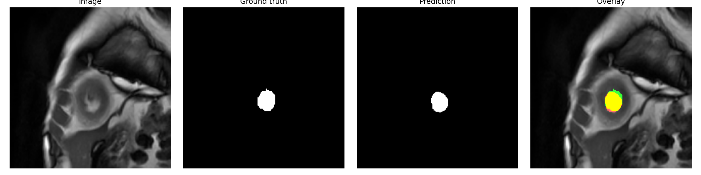
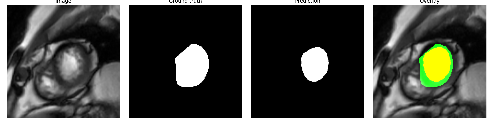

Clinical and Technical Objective
The goal is to segment two cardiac MRI contours: the endocardium, which separates the ventricular cavity from the myocardium, and the epicardium, which follows the external myocardial boundary.
The project combines anatomical understanding, U-Net segmentation, quantitative evaluation and visual inspection. It is an educational and research-oriented prototype, not a clinical decision-support tool.
Workflow

Validation Results
Validation was performed on 30 held-out frames using trained Keras U-Net checkpoints.

| Target | Dice | IoU | Precision | Recall | Hausdorff | ASSD |
|---|---|---|---|---|---|---|
| Endocardium | 0.9374 | 0.8849 | 0.9442 | 0.9369 | 7.35 | 2.29 |
| Epicardium | 0.9198 | 0.8639 | 0.9406 | 0.9187 | 20.66 | 4.58 |
Metric Interpretation
Overlap metrics
- Dice: similarity between predicted and reference masks.
- IoU: stricter overlap score based on intersection over union.
- Precision: how often predicted structure pixels are correct.
- Recall: how much of the real structure is recovered.
Boundary metrics
- Hausdorff: worst-case contour distance; sensitive to local outliers.
- ASSD: average symmetric surface distance; smoother view of boundary error.
The endocardium model is more stable across metrics. The epicardium model has strong overlap but a higher Hausdorff distance, suggesting more local boundary variability on the outer myocardial contour.
Qualitative Validation Panels
Each panel displays the input image, ground-truth mask, predicted mask and overlay.


Reproducibility and Deployment
The repository keeps the scientific workflow inspectable:
src/segmed: dataset, model, metrics, pipeline and CLI.configs: endocardium and epicardium experiment settings.docs/results: public validation summaries.app/streamlit_app.py: local interactive inference prototype.